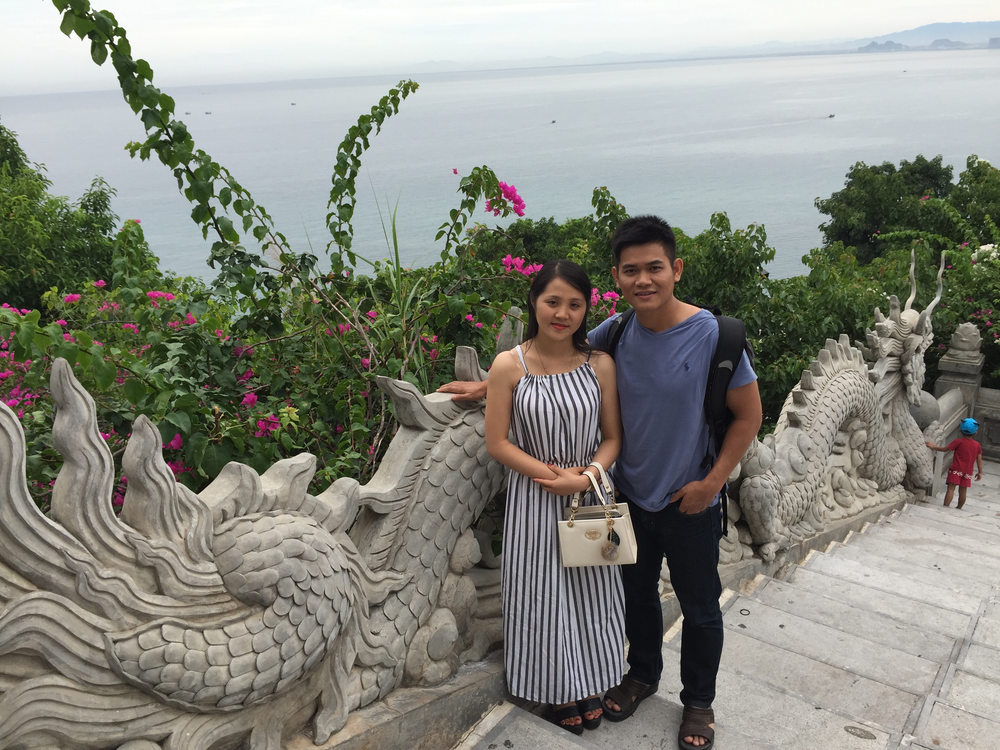
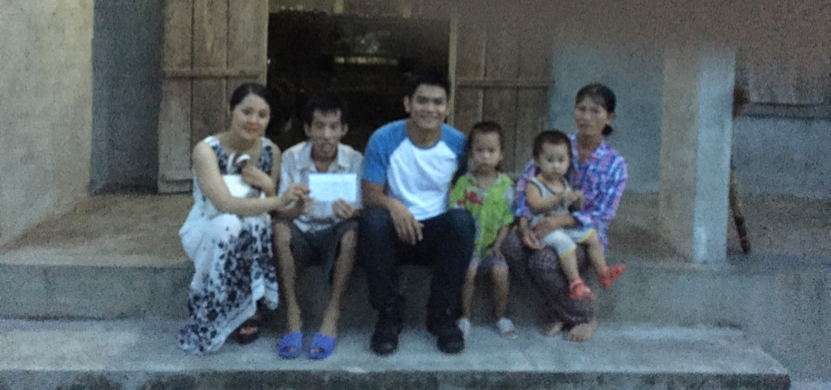

TIMELINE OF OUR RELATIONSHIP
This is our revised timeline which contains more details and evidences than
the submitted timeline on July 6, 2017 at the U.S. Consulate General Ho Chi Minh City. For example,
here is the screenshot which shows how I obtained Ngan's email and phone number through
vietsingle Gold Account service. Our more recent activities can be found in the
homepage.
1. My first trip to Vietnam: December 24th, 2015 to January 20th, 2016
I knew Ngan Thi Tran from http://vietsingle.com/ when I was in hometown (Quy Nhon city, Binh Dinh, Vietnam). I was impressed by her profile and pictures and decided to contact her. I obtained her email using vietsingle Gold Account service (please see the vietsingle receipt registered on my personal email ). I did this to bypass vietsingle as the middle man and to avoid limitations using standard services (limits 3 emails/day)
.
Then I created another email (instead of using my personal email nhontuan@gmail.com) under the name Nguyen H since vietsingle is not reliable with many spams and I did not want to reveal my identity. I sent Ngan Thi Tran the first email on December 28th, 2015. And she replied. Please find my introduction email and Ngan’s response here.
As indicated in the email, Ngan suggested to talk on tango, a free video call & chat service. As a computer geek, I can easily find Ngan on tango by searching for her email (even though this was the first time I heard about it).
Unfortunately, we have deleted our vietsingle profiles as well as all tango conversations (after returning the U.S., we have been using Skype to talk). The introduction email is the only evidence that we still kept before setting up our first meeting in person.
On the first of January, 2016, I met Ngan Thi Tran in Da Nang city, Vietnam (which is 5 hours by train from Quy Nhon city). Ngan picked me up at the Da Nang Railway Station around 2pm to Tường Vy hotel. In the evening of the same date, we went to a concert by Heniken in Han river, Da Nang. After the concert, Ngan took me back Tường Vy hotel and she came back to her place. On the second day, we then drove to Linh Ung Temple and decided to go together to Hue city the next day. In morning of January 3rd, we drove to Hue city by motorbike (it took us about 3 hours driving) and stayed at Gold Hotel in Hue city (please find my booking on Agoda at Gold Hotel here).
I learned a lot about Ngan within 2 days in Hue city. We had our best memories here. We discovered the best Banh Canh in Hue with a very funny name “O Bướm” close to Đông Ba market (see the picture taken at “O Bướm”). The price was 10,000 VND/serving, we were so surprise about that. We walked on the side way of Huong river and found a Human statue that Ngan convinced me “It is a real statue”. Somehow I trusted her and hit the Human statue in his arm. But Human statue started moving, this made us scared, laughed, and ran away.
Overall, two days in Hue was a great time that I found a lot of funs spending time with Ngan. Ngan is a very sweet and caring person. This helped me to forget about my broken marriage in Chicago.
On the 5th of January, 2016, we drove back to Da Nang city. Ngan’s motorbike got broken on the way back so I had to take the night train back to Quy Nhon City (instead of the 2pm train as planned).
Four days later, I came back Da Nang city to learn more about Ngan. She had told me more about her family and her ex-boyfriend. In Hoi An (45-mitnute driving from Da Nang city), I decided to tell Ngan about my broken marriage and how much I suffered from it. I received the sharing from Ngan and I remember that she was holding my hand in the entire time. We spent the whole night on Pham Van Dong beach, Da Nang city as I had tons of stories about my broken marriage to tell her. My second trip to Da Nang was not as happy as the first trip but I was a huge release from me since I have found a person to share the troubles that I had in my marriage.
We met the third time in Quy Nhon city (Ngan took the same train to visit my hometown). I had a chance to tell her about the city, my secondary school, and my childhood. I also told her about my family plan in opening a private hospital which is a joint business of my mom, uncle 9, and uncle 5. There was a disagreement in stock sharing. I asked Ngan to do the calculation to make sure that my mom receives the fair investment sharing (Ngan had experiences in accounting). Unpurposely, I challenged Ngan to work in my family and take care of my mom as well as to help her business. Ngan immediately accepted in my surprise. This picture shows that we also emailed about the stock sharing of my family business.
At 6pm on January 18, 2016, I and Ngan took a train to Ho Chi Minh City. On January 19, 2016, I took the flight to come back to the U.S. while Ngan took another flight to come back to Da Nang city.
We then kept in touch on Skype (as indicated in this picture).
After the lunar new year of 2016, I was able to convince my mom to accept Ngan to work in our house in Quy Nhon city. I introduced Ngan as a younger sister of my friend, and their family was in a financial difficulty. Ngan entered my home with a faked name, Mai, and worked as a house keeper (her salary was only 3,000,000 VND per month). Our intentions were 1) Ngan can help me to keep track of investment sharing of my family business 2) Ngan can take care of my mom and 3) Ngan learn about my mom business (buying and selling shrimps). Ngan did a good job on 1) and 2) but not 3) since she needed more time to gain trust from my mom. However after 2.5 months, my mom became skeptical about Ngan since Ngan was so much smarter than a normal house keeper. My mom started to change her feelings about Ngan (known as Mai at that point) since she thought Ngan was a liar who entering the house for a different purpose and Ngan was part of my decision of withdrawing the investment on the private hospital (my mom really wants to help Uncle 9 who is a doctor). I could not explain this to my mom since I could not reveal our relationship. After that, Ngan left Quy Nhon city and came back to Da Nang city. In summary, Ngan entered my family with good intentions which did not turn out well and this really hurts what my mom thinks about Ngan.
Meanwhile, my marriage got deeper and deeper into arguments about money (and benefits for her family, including her parents, sister, and brothers). Here is an example of a night in my marriage life. I proposed to my ex-wife (Amy Pham, phone number (+1) 312-662-3174 ) to terminate this troublesome marriage due to the following reasons:
- I have suffered from this since the end of 2011 and could not find a way to resolve it. I did not receive any sharings/understanding from Amy, my ex-wife.
- I accepted an offer to be an Assistant Professor at Texas Tech University. I wanted to start a new life in a new city.
- A lot of arguments (and actions) happened in front of my son (I tried to avoid these circumstances). My son needs a normal life that he can go to school in the morning and have funs instead of listenning and seeing arguments between dad and mom.
2. My second trip to Vietnam: July 20th, 2016 to August 20th, 2016
I made another trip back Vietnam on July 20, 2016. I went to Da Nang city to visit Ngan on July 24th. Ngan has helped me to recover from the most difficult time in my life. The following picture was taken at Linh Ung temple (the first time that she agreed to have a picture together).

On the 26th of July,2016, we started to travel together to Hue city (27th of July 2016, please see the booking here)), Dong Hoi city, Quang Binh (28th of July, 2016, please see the booking here)), and then Vinh City, Nghe An (29th of July 2016, please see the booking here)), and then Dien Phong, Dien Chau, Nghe An (this is the first time that I visit Ngan family). While staying in Ngan’s hometown, we made a trip to visit a poor family (of Nguyen Van Nguyen) in Hamlet 9, Nam Lâm, Diễn Lâm, Diễn Châu, Nghệ An (see the picture below).

After a few days, we left Nghe An to go to Pleiku, Gia Lai. I visited another special family who needs helps. Mr. Phuoc and his family host 84 mental patients (at the point of visit in August 2016) without supports from the government. This video captures our visit.
We then came back to Quy Nhon city, my hometown. After a few more days, we went to Dalat city, Lam Dong. We were notified that Ngan’s grand-father passed away on our way to Dalat city. We had to take a flight back to Vinh city and then came back Dien Phong, Dien Chau, Nghe An.
On August 13, 2016, we took a flight from Vinh city to Pleiku city (please see the booking here), Gia Lai and then took a bus to Quy Nhon city. The following pictures were taken at Trung Luong, Cát Tiến, Bình Định (an hour driving from Quy Nhon city, I used my family car to make this trip).
Our relationship became serious:
The trips help me to realize that she is my soulmate. I verbally proposed that we will be together for the rest of our lives. We both understand that this is not easy since we will not receive supports from my family. We did not have much time left, so we decided to take the pre-wedding photos on the August 17th, 2016 (3 days before my flight back the U.S.). Here is our pre-wedding photo collection.
On the 19th of August 2016, we flew to Ho Chi Minh city for my flight back to the U.S. on the next day (see Tommy's and Ngan's boarding passes).
After I got back to the U.S., my ex-wife learned that I knew Ngan by hacking into my Skype. Consequently, my ex-wife made the divorce process more difficult:
- She asked to transfer our house in Chicago to her name (we were the joint owner at that time, which was then transfered to her name).
- She asked to transfer all money in my checking to her bank account (I agreed and did that).
- She asked to me to provide child support which is equivalent to 30% of my salary (I agree and have been doing that after divorce).
I informed Ngan about these conditions and the fact that I will be empty-handed after divorce (except my current job at Texas Tech University). Ngan accepted that and agreed to be with me.
I have accepted all my wife requests above and my marriage was officially terminated on December 20th, 2016.
My mom was aware of my divorce. But my mom did not like me to get married with Ngan since the think that Ngan want to be with me for the financial reason. Moreover, my mom want my spouse to be at the same level as mine: similar education, similar occupation. I did not agree with my mom because during the time that I know Ngan I can felt that Ngan is the girl that I am looking for. For this reason, the relationship between me and my mom was damaged.
I submitted the petition for fiancé Visa on the 2nd of January 2017.
Again, Skype was the main channel for our communication. I also did not forget to send Ngan gifts on Valentine 2017 and the International woman date 2017.
3. My third trip to Vietnam: June 19 to July 10, 2017
On June 19th, 2017, I came back Vietnam to see Ngan and to prepare for our interview (at the U.S. Consulate General Ho Chi Minh City on June 30th, 2017). I landed in Ha Noi city, Vietnam. We stayed at the Rising Dragon Estate Hotel (here is the receipt).
On the next day, we took a bus to Sapa and stayed there for 4 days. Together we toured Fansipan, Silver River, Bản Cát Cát, Bản Tả Van, and Sapa city center. Many pictures of our trip have been taken.
On the 24th of June 2017, we came back to Hanoi city for the soccer game between Ha Noi FC and Hai Phong FC (Please find our booking for Grab taxi).
On the 25th of June 2017, we took a train from Hanoi city to Vinh City , Nghe An. We stayed at Ngan’s Uncle house in Vinh city (Please find our train tickets).
Our official proposal:
We asked her uncle wife (Hai Le, phone number 0983808863) to select a restaurant for our official proposal. In the evening of the 25th of June 2016, together with Ngan’s Uncle family, I proposed and Ngan accepted (Please find the video of our proposal)
Time: 7pm, June 25th, 2017
Location: 9B Mai Hắc Đế, Vinh city, Nghe An.
Phone number: 038 353 9999 - 0904 398 398
Website: https://nhahangminhhong.com.vn
Facebook: https://www.facebook.com/minhhong.nhahang.tieccuoi
On the 26th of June 2017, we came back to Ngan hometown in Dien Phong, Dien Chau, Nghe An to see Ngan’s family. In front of her grand-father (her mother side), grand-mother (her father side), and her family, I have explained our wish to be together and I wanted bring Ngan to the U.S. with me. Her family has agreed.
On the 27th of June 2017, we also revisited the poor family that we saw on my previous trip in August 2016 (Nguyen Van Nguyen in Hamlet 9, Nam Lâm, Diễn Lâm, Diễn Châu, Nghệ An). This time, we found out that Van Nguyen’s uncle is even more special than his case and we helped him with a small amount of money to cover living expenses(Please find our picture).
On the afternoon of June 27th of 2017, we and Ngan’s family drove to Cua Lo beach, Vinh city, Nghe An. Her family dropped us off at Vinh airport in the evening of June 27th of 2017 to take a flight to Ho Chi Minh city in the early next morning (Please find our flight tickets).
We stayed at Kim Phat hotel in Ho Chi Minh city for 5 days including the date of our interview on June 30th (Please find our hotel receipt). We have selected this hotel since this is close to my father place (he was staying at 314/2HA Lac Long Quan Street, Ward 5, District 11, Ho Chi Minh city).
At 6am on the 30th of June 2017, we was at the U.S. Consulate General Ho Chi Minh City for our interview. For different objective reasons, we did not keep all evidences of our relationship (especially for how we got to know each other and my first trip to see Ngan). Consequently, the U.S. Consulate officer was not convinced about our relationship on the interview. Ngan cried after the interview till we got back to the hotel. I felt bad that I could not do anything to make the situation better.
I convinced Ngan to meet my father (my father and my mother were separated over 10 years ago and my father is living alone) for lunch after the interview. After lunch, we have revealed our relationship (as well as Ngan’s time serving as a house keeper in the family in Quy Nhon city) to my father (Ngu Nhon Dang, phone number 01662504055) and seek for advices. Actually, Ngan met my father on my second trip back to Vietnam (July 20th, 2016 to August 20th, 2016) and she has been helping my father whenever he needs (my father is on medication for his spine). Ngan was my point of contact regarding any issues related to my father conditions in the past year. She was happy taking care of my father and consider my father as her father. My father was considerate about our situation. This actually brought us closer.
At 12:30am on the 2st of July 2017, there was an unexpected District 11 police inspection at our hotel room. The police officer has recorded our names, date of birth, and duration that we stayed at Kim Phat hotel. We hope that this record can be verified by the U.S. Consulate officer.
On the 2nd of July 2017, we traveled back to Quy Nhon city (Please find our flight tickets). We hope to have a chance to convince my mother about our relationship. However, my mom was really tough and not willing to talk about this. Anyways, we spent time to eat at the places and visit the sights that we used to come last year (in 2016). Notably, we enjoyed sleeping on the Quy Nhon Beach overnight since we both love the open space, the wave sounds, and softness of sands. Beach was the place that our love started, the place where we learned and understand about each other, and the place that we come back to share our happiness and sadness.
On the 6th of July 2017, we came back to the U.S. Consulate General Ho Chi Minh City for submiting additional documents. After a few hours of nervous waiting, Ngan's Visa application has been rejected. She was completely broken down and had to receive emergency treatment (by the U.S. Consulate nurse). Due to the requirements of my job, I had to come back to the U.S. alone on the 10th of July, 2017. It was really sad and unforgetable momment for both of us. Here is our photo collection for July 2017.
I, Tommy Dang, do hereby state that I am legally able and willing to marry Ngan Thi Tran, and intend to do so on her arrival into the U.S. using the K-1 Visa. Once she has arrived to the United States, we will get married at Spirit Ranch 701 Regis St, Lubbock, TX 79403, USA (I learned about this place from a collaborator at work).
We both don’t have any relatives in the U.S. so we are planning to invite only my friends and colleagues.

{kind=link}
{kind=link}
{kind=link}
{kind=link}
{kind=link}

{kind=link}
{kind=link}
{kind=link}
{kind=link}
{kind=link}
{kind=link}
{kind=link}
{kind=link}
{kind=link}
{kind=link}
{kind=link}


{kind=link}
{kind=link}
{kind=link}